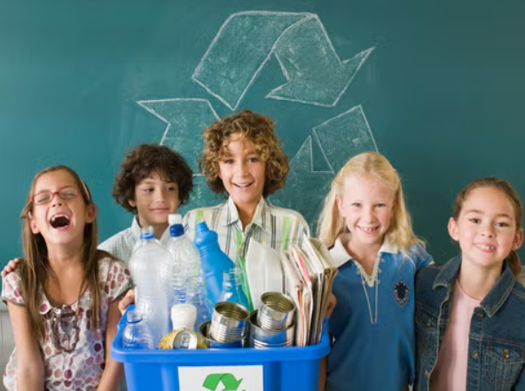

La Importancia de Aprender a reciclar
 ¡Bienvenidos esta divertida aventura de aprendizaje sobre el reciclaje! 🌱♻️😊                              Â

¿Estas listo? ... Para adentrarnos en este reto, te invito a que te coloques la capa y le des clic en la opción "siguiente", ubicado en la parte inferior derecha, para continuar con esta aventura. ⬇️💪 